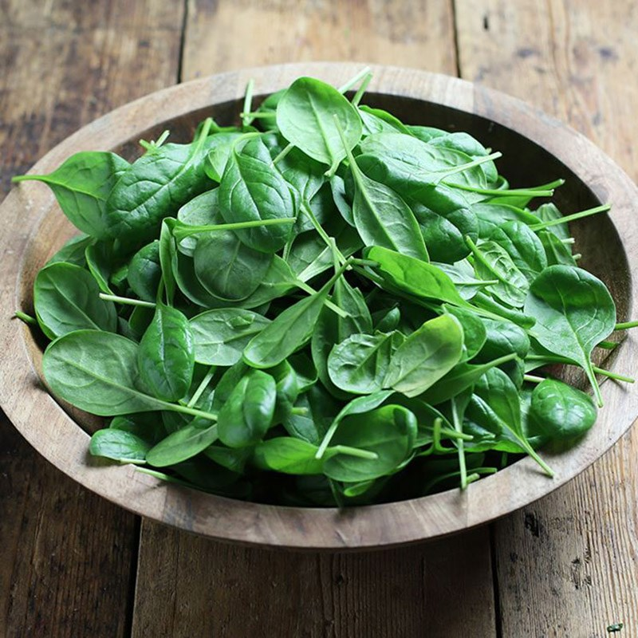

AQUABAY Doanh nghiệp văn hóa tiêu biểu thời kỳ hội nhập năm 2024
25-06-2024Top 15 Thực Phẩm Lành Mạnh Cho Bữa Ăn Ngày Hè
Trong bài viết này, thương hiệu nước ion kiềm AQUABAY sẽ gợi ý các loại thực phẩm lành mạnh mà bạn nên thêm vào bữa ăn mùa hè của mình.
1. Các loại trái cây tươi mát
1.1. Dưa hấu
Dưa hấu chứa đến 92% nước, giúp cung cấp nước và các chất dinh dưỡng cần thiết cho cơ thể trong những ngày nắng nóng. Ngoài ra, dưa hấu còn chứa lycopene, một chất chống oxy hóa mạnh mẽ, có thể giúp bảo vệ làn da khỏi tác hại của ánh nắng mặt trời.
Dưa hấu chứa nhiều vitamin, mọng nước
1.2. Dứa
Dứa là loại trái cây chứa nhiều vitamin C, enzyme bromelain và các chất chống viêm tự nhiên, giúp tăng cường hệ miễn dịch và hỗ trợ tiêu hóa. Bạn có thể ăn dứa tươi hoặc chế biến thành nước ép để thưởng thức.
1.3. Các loại quả mọng
Các loại quả mọng như dâu tây, việt quất, mâm xôi, nho,... giúp bổ sung nước và giữ cho cơ thể luôn mát mẻ. Chúng cũng chứa nhiều vitamin C và chất chống oxy hóa, giúp tăng cường hệ miễn dịch và bảo vệ da khỏi tác hại của ánh nắng mặt trời.
Ngoài ra, quả mọng còn ít calo, giàu chất xơ, giúp duy trì cân nặng và tiêu hóa tốt hơn. Vì vậy, việc thưởng thức quả mọng vào mùa hè không chỉ làm dịu cơn khát mà còn mang lại nhiều lợi ích sức khỏe.
2. Các loại đồ uống lành mạnh
2.1. Nước ion kiềm
Trong những ngày hè oi bức, việc duy trì cơ thể luôn đủ nước là vô cùng quan trọng. Nước ion kiềm là lựa chọn tuyệt vời nhờ chứa các nhiều khoáng chất tốt giúp cân bằng độ pH trong cơ thể và tăng cường quá trình trao đổi chất.

Nước ion kiềm AQUABAY mang lại nhiều lợi ích về sức khỏe tổng thể
Hiện nay, AQUABAY là thương hiệu nước ion kiềm đầu tiên tại Việt Nam được Chính phủ vinh danh “thương hiệu Quốc gia” 2 lần liên tiếp. Đây được xem bảo chứng cho chất lượng sản phẩm nên bạn hãy yên tâm sử dụng nước AQUABAY hàng ngày.
Nước AQUABAY có tính kiềm tự nhiên cao pH 8.5-9.5 giúp trung hòa axit dư thừa trong cơ thể, tốt cho hệ tiêu hóa, đặc biệt là có thể bù được chất điện giải trong quá trình luyện tập.
Bên cạnh đó, nước AQUABAY được sản xuất bằng công nghệ điện phân nên cụm phân tử nước chỉ nhỏ bằng ½ so với nước uống thông thường, giúp nước thẩm thấu nhanh chóng đến mọi tế bào. Đồng thời, thúc đẩy quá trình trao đổi chất, tuần hoàn máu và đào thải độc tố ra khỏi cơ thể thông qua hệ bài tiết và mồ hôi.
Ngoài ra, nước AQUABAY còn chứa hàm lượng khoáng chất cân bằng tồn tại dưới dạng ion như: Na, Ca, Mg, K… giúp tăng sức đề kháng và sự dẻo dai trong quá trình tập luyện.
2.2. Nước dừa
Nước dừa là loại nước uống tự nhiên giúp bổ sung điện giải, đặc biệt hữu ích sau khi bạn tham gia các hoạt động ngoài trời hay luyện tập thể thao. Nước dừa còn chứa nhiều kali và magie, giúp điều hòa huyết áp và tăng cường sức khỏe tim mạch.
2.3. Trà xanh
Trà xanh chứa nhiều chất chống oxy hóa, giúp tăng cường hệ miễn dịch và hỗ trợ quá trình đốt cháy chất béo. Một ly trà xanh mát lạnh vào buổi chiều hè sẽ giúp bạn cảm thấy sảng khoái và tràn đầy năng lượng.
3. Các loại rau xanh
3.1. Rau bina (Spinach)
Rau bina (spinach) là một loại thực phẩm giàu dinh dưỡng, mang lại nhiều lợi ích cho sức khỏe. Rau chứa nhiều vitamin và khoáng chất như vitamin A, C, K, sắt và canxi, giúp tăng cường sức khỏe mắt, xương và hệ tim mạch.

Rau bina giàu chất dinh dưỡng và các vitamin tốt cho sức khỏe
Chất xơ trong rau bina cải thiện tiêu hóa và hỗ trợ quản lý cân nặng. Ngoài ra, các chất chống oxy hóa và chống viêm trong rau bina giúp bảo vệ tế bào và tăng cường hệ miễn dịch. Việc bổ sung rau bina vào chế độ ăn hàng ngày vào mùa hè sẽ giúp cải thiện sức khỏe tổng thể và phòng ngừa bệnh tật.
3.2. Rau diếp
Rau diếp chứa nhiều vitamin A, C, K và folate giúp tăng cường hệ miễn dịch, cải thiện sức khỏe mắt và xương. Chất xơ trong rau diếp hỗ trợ tiêu hóa, giúp kiểm soát cân nặng và duy trì hệ vi khuẩn đường ruột khỏe mạnh. Rau diếp còn có tác dụng chống viêm và bảo vệ tim mạch. Đây cũng là loại rau rất dễ chế biến trong các món salad mùa hè mát lạnh.
3.3. Dưa leo
Dưa leo giúp duy trì sự hydrat hóa nhờ hàm lượng nước cao, làm đẹp da, và hỗ trợ tiêu hóa với lượng chất xơ dồi dào. Nó còn chứa nhiều vitamin và khoáng chất như vitamin K, kali, giúp giảm viêm, hỗ trợ sức khỏe tim mạch và kiểm soát cân nặng.
Dưa leo có hàm lượng nước cao và ít calo giúp giải nhiệt hiệu quả. Bạn có thể ăn dưa leo sống, trộn salad hoặc làm nước ép đều rất tốt.
4. Các Loại Hạt và Ngũ Cốc
4.1. Hạt chia
Hạt chia là nguồn cung cấp omega-3, chất xơ và chất đạm dồi dào. Khi ngâm trong nước, hạt chia nở ra và tạo thành một lớp gel, giúp tăng cường hydrat hóa cho cơ thể. Bạn có thể thêm hạt chia vào nước uống, sữa chua hoặc smoothie.
Hạt chia chứa nhiều chất dinh dưỡng tốt, dễ kết hợp với nhiều đồ uống
4.2. Hạt hạnh nhân
Hạt hạnh nhân giàu vitamin E, magiê và protein, giúp cung cấp năng lượng và duy trì sức khỏe tim mạch. Bạn có thể ăn hạnh nhân như một món ăn vặt hoặc thêm vào các món salad.
4.3. Yến mạch
Yến mạch chứa nhiều chất xơ hòa tan, giúp kiểm soát lượng đường trong máu và tạo cảm giác no lâu. Bạn có thể chế biến yến mạch thành bữa sáng với sữa chua, trái cây và mật ong.
5. Thực phẩm giàu protein
5.1. Thịt gà
Thịt gà, đặc biệt là phần ức gà, chứa nhiều protein và ít chất béo, giúp duy trì năng lượng và cảm giác no lâu. Bạn có thể chế biến thịt gà theo nhiều cách khác nhau như nướng, luộc hay làm salad.
5.2. Cá hồi
Loại thực phẩm lành mạnh này chứa nhiều omega-3, giúp bảo vệ tim mạch và giảm viêm. Omega-3 còn giúp tăng cường sức khỏe tim mạch, chức năng não bộ và giảm viêm. Bên cạnh đó, cá hồi còn cung cấp protein, vitamin D và B12 cải thiện hệ miễn dịch cho cơ thể. Cá hồi nướng hoặc hấp là lựa chọn tuyệt vời cho bữa ăn mùa hè.
Cá hồi chứa nhiều omega 3 và các vitamin tốt cho não bộ, tim mạch
5.3. Trứng gà
Trứng gà cung cấp nguồn protein, chất béo lành mạnh, vitamin D, B12 và khoáng chất giúp tăng cường sức khỏe xương, cơ bắp và trí não. Trứng có thể được chế biến thành nhiều món ngon như trứng luộc, trứng ốp la hay salad trứng, phù hợp với bữa ăn ngày hè.
Mùa hè là thời điểm lý tưởng để tận hưởng những loại thực phẩm lành mạnh và tươi ngon. Bằng cách bổ sung các loại trái cây tươi, rau xanh, thực phẩm giàu protein, hạt và ngũ cốc, cùng với các loại đồ uống giải nhiệt như nước ion kiềm AQUABAY, nước dừa, trà xanh,...sẽ giúp cơ thể luôn tràn đầy năng lượng và khỏe mạnh trong suốt mùa hè. Đừng quên duy trì một chế độ ăn uống cân bằng và đa dạng để cơ thể luôn ở trạng thái tốt nhất.